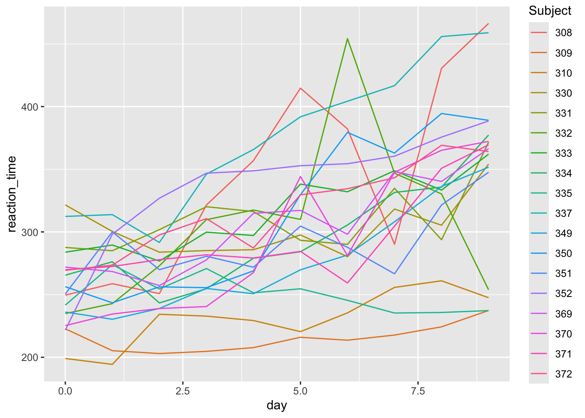
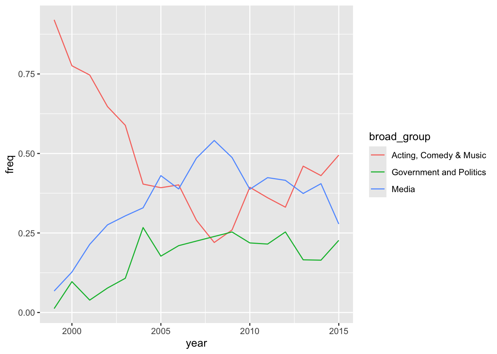

# Make a line plot of reaction time by day for each subject# Put these all on the same frameggplot(sleep_long, aes(y = reaction_time, x = day, color = Subject)) +geom_line()

# Make a line plot of reaction time by day for each subject# Put these all on separate frames (one per subject)ggplot(sleep_long, aes(y = reaction_time, x = day, color = Subject)) +geom_line() +facet_wrap(~ Subject)
Part b
Reaction time increases (worsens) with a lack of sleep. Some subjects seem to be more impacted than others by lack of sleep, and some tend to have faster/slower reaction times in general.
# A tibble: 15 × 2
raw_guest_list n
<chr> <int>
1 Fareed Zakaria 19
2 Denis Leary 17
3 Brian Williams 16
4 Paul Rudd 13
5 Ricky Gervais 13
6 Tom Brokaw 12
7 Bill O'Reilly 10
8 Reza Aslan 10
9 Richard Lewis 10
10 Will Ferrell 10
11 Sarah Vowell 9
12 Adam Sandler 8
13 Ben Affleck 8
14 Louis C.K. 8
15 Maggie Gyllenhaal 8
plot_data <- daily |>mutate(broad_group =case_when( group %in%c("Acting", "Athletics", "Comedy", "Musician") ~"Acting, Comedy & Music", group %in%c("Media", "media", "Science", "Academic", "Consultant", "Clergy") ~"Media", group %in%c("Politician", "Political Aide", "Government", "Military", "Business", "Advocacy") ~"Government and Politics",.default =NA )) |>filter(!is.na(broad_group))plot_data |>group_by(year, broad_group) |>summarise(n =n()) |>mutate(freq = n /sum(n)) |>ggplot(aes(y = freq, x = year, color = broad_group)) +geom_line()

Source Code
---title: "ica-reshaping"editor: visual------title: "Reshaping"number-sections: trueexecute: warning: falsefig-env: 'figure'fig-pos: 'h'fig-align: centercode-fold: false---- [Demonstrating pivoting (YouTube)](https://www.youtube.com/watch?v=k3SZ8keibuQ&feature=youtu.be) by Lisa Lendway- [Pivoting vignette (html)](https://tidyr.tidyverse.org/articles/pivot.html) by tidyr- [Pivoting (html)](https://r4ds.hadley.nz/data-tidy.html#sec-pivoting) by Wickham and Grolemund- [Reshaping data](https://mdsr-book.github.io/mdsr2e/ch-dataII.html#reshaping-data) by Baumer, Kaplan, and Horton```{r}library(tidyverse)sleep_wide <-read.csv("https://mac-stat.github.io/data/sleep_wide.csv")head(sleep_wide)```### Exercise 1: What's the problem? {.unnumbered}#### Part a {.unnumbered}subjects/people#### Part c {.unnumbered}`pivot_longer()`### Exercise 2: Pivot longer {.unnumbered}#### Part a {.unnumbered}```{r}# For cols, try 2 appproaches: using - and starts_withsleep_wide |>pivot_longer(cols =-Subject, names_to ="day", values_to ="reaction_time")sleep_wide |>pivot_longer(cols =starts_with("day"), names_to ="day", values_to ="reaction_time")```#### Part b {.unnumbered}Adding `names_prefix = "day_"` removed "day\_" from the start of the `day` entries. did this impact how the values are recorded in the `day` column?```{r}sleep_long <- sleep_wide |>pivot_longer(cols =-Subject,names_to ="day",names_prefix ="day_",values_to ="reaction_time") ```#### Part c {.unnumbered}`Subject` is an integer and `day` is a character. We want them to be categorical (factor) and numeric, respectively.```{r}ggplot(sleep_long, aes(y = reaction_time, x = day, color = Subject)) +geom_line()```### Exercise 3: Changing variable classes & plotting {.unnumbered}```{r}sleep_long <- sleep_wide |>pivot_longer(cols =-Subject,names_to ="day",names_prefix ="day_",values_to ="reaction_time") |>mutate(Subject =as.factor(Subject), day =as.numeric(day))```#### Part a {.unnumbered}*Now* make some plots.```{r}# Make a line plot of reaction time by day for each subject# Put these all on the same frameggplot(sleep_long, aes(y = reaction_time, x = day, color = Subject)) +geom_line()``````{r}# Make a line plot of reaction time by day for each subject# Put these all on separate frames (one per subject)ggplot(sleep_long, aes(y = reaction_time, x = day, color = Subject)) +geom_line() +facet_wrap(~ Subject)```#### Part b {.unnumbered}Reaction time increases (worsens) with a lack of sleep. Some subjects seem to be more impacted than others by lack of sleep, and some tend to have faster/slower reaction times in general.### Exercise 4: Pivot wider {.unnumbered}#### Part a {.unnumbered}```{r}sleep_long |>pivot_wider(names_from = day, values_from = reaction_time) |>head()```#### Part b {.unnumbered}```{r}sleep_long |>pivot_wider(names_from = day, values_from = reaction_time, names_prefix ="day_") |>head()```### Exercise 5: Practice with Billboard charts {.unnumbered}#### Part a {.unnumbered}The higher a song's week 1 rating, the higher its week 2 rating tends to be. But almost all song's rankings drop from week 1 to week 2.```{r}# Load datalibrary(tidyr)data("billboard")# Check it outhead(billboard)ggplot(billboard, aes(y = wk2, x = wk1)) +geom_point() +geom_abline(intercept =0, slope =1)```#### Part b {.unnumbered}```{r}billboard |>filter(wk2 > wk1)```#### Part c {.unnumbered}```{r}# Define nov_1999nov_1999 <- billboard |>filter(date.entered =="1999-11-06") |>select(-track, -date.entered)# Ornov_1999 <- billboard |>filter(date.entered =="1999-11-06") |>select(artist, starts_with("wk"))# Confirm that nov_1999 has 2 rows (songs) and 77 columnsdim(nov_1999)```#### Part c {.unnumbered}```{r}nov_1999 |>pivot_longer(cols =-artist, names_to ="week", names_prefix ="wk", values_to ="ranking") |>mutate(week =as.numeric(week)) |>ggplot(aes(y = ranking, x = week, color = artist)) +geom_line()```### Exercise 6: Practice with the Daily Show {.unnumbered}#### Part a {.unnumbered}```{r}library(fivethirtyeight)data("daily_show_guests")daily <- daily_show_guestsdaily |>count(raw_guest_list) |>arrange(desc(n)) |>head(15)```#### Part b {.unnumbered}```{r}daily |>count(year, raw_guest_list) |>group_by(raw_guest_list) |>mutate(total =sum(n)) |>pivot_wider(names_from = year, values_from = n,values_fill =0) |>arrange(desc(total)) |>head(15)```#### Part c {.unnumbered}```{r}plot_data <- daily |>mutate(broad_group =case_when( group %in%c("Acting", "Athletics", "Comedy", "Musician") ~"Acting, Comedy & Music", group %in%c("Media", "media", "Science", "Academic", "Consultant", "Clergy") ~"Media", group %in%c("Politician", "Political Aide", "Government", "Military", "Business", "Advocacy") ~"Government and Politics",.default =NA )) |>filter(!is.na(broad_group))plot_data |>group_by(year, broad_group) |>summarise(n =n()) |>mutate(freq = n /sum(n)) |>ggplot(aes(y = freq, x = year, color = broad_group)) +geom_line()```